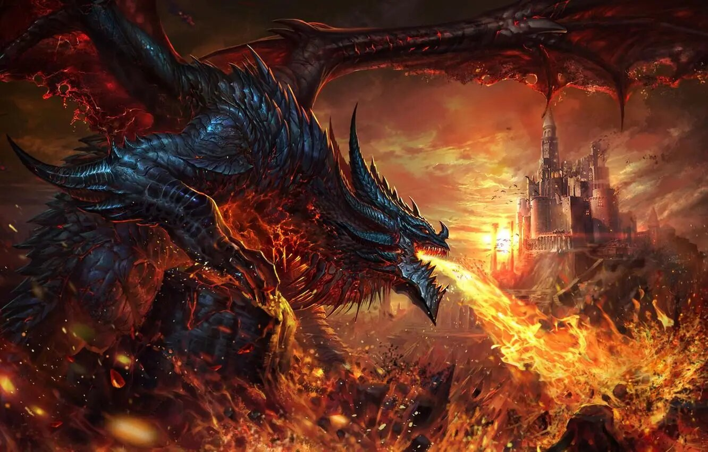
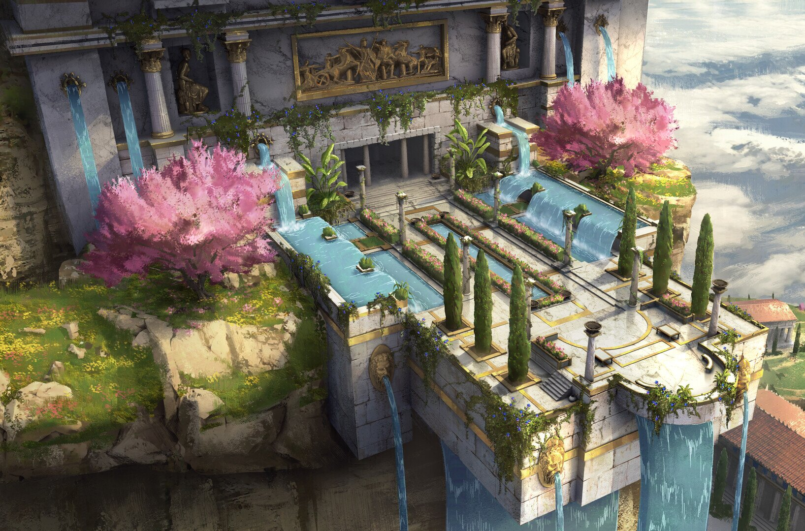

Cards
Colection

Dracomania

Mythomania
Naruto
X-Men

![Naruto, desenho de jovem loiro com olhos azuis, usando casaco laranja com uma listra azul que circula a parte de cima do peito e as laterais dos ombros, gola com detalhe de lâ, no ombro esquerdo uma espiral branca, calça laranja, camisa de mangá azul por baixo do casaco que se encontra aberto, na testa uma bandana azul com símbolo de folha talhado em uma placa retangular de pontas arredondadas sobre a bandana, este jovem no desenho está de frente para quem olha a imagem, olhando para frente com a cabeça abaixada](public/assets/images/narut-banner.jpg)